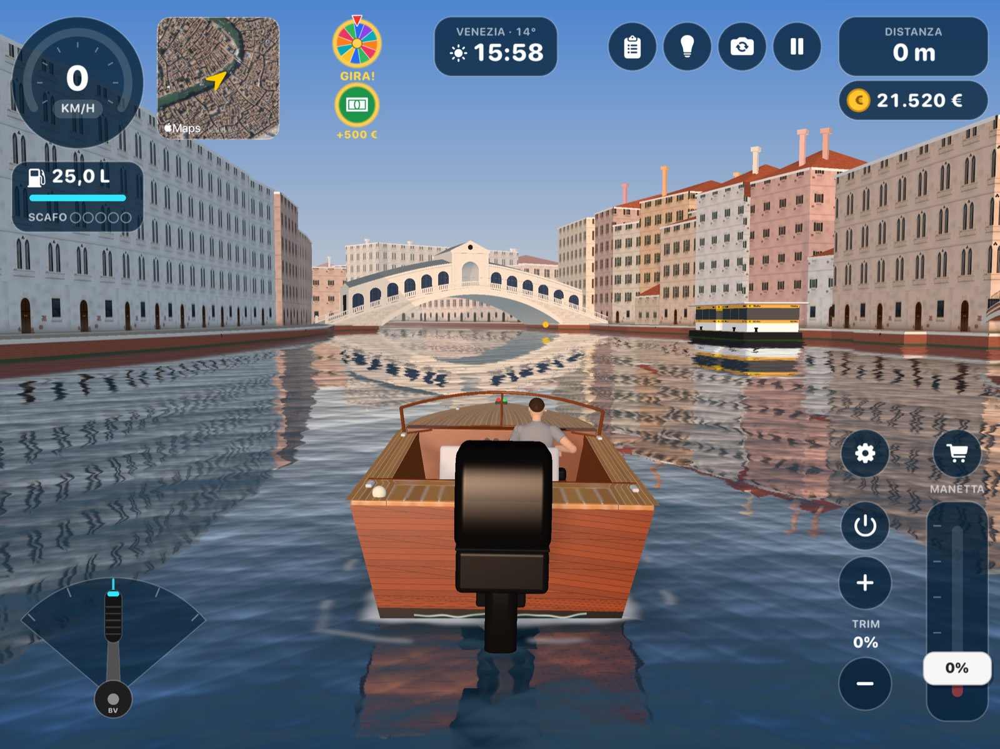
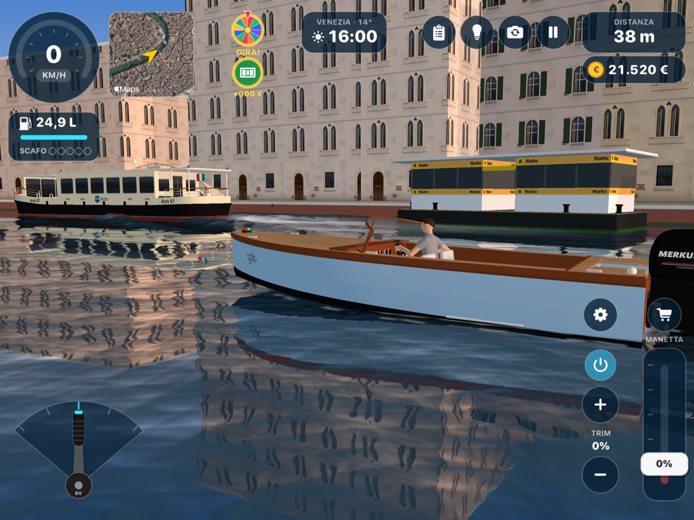
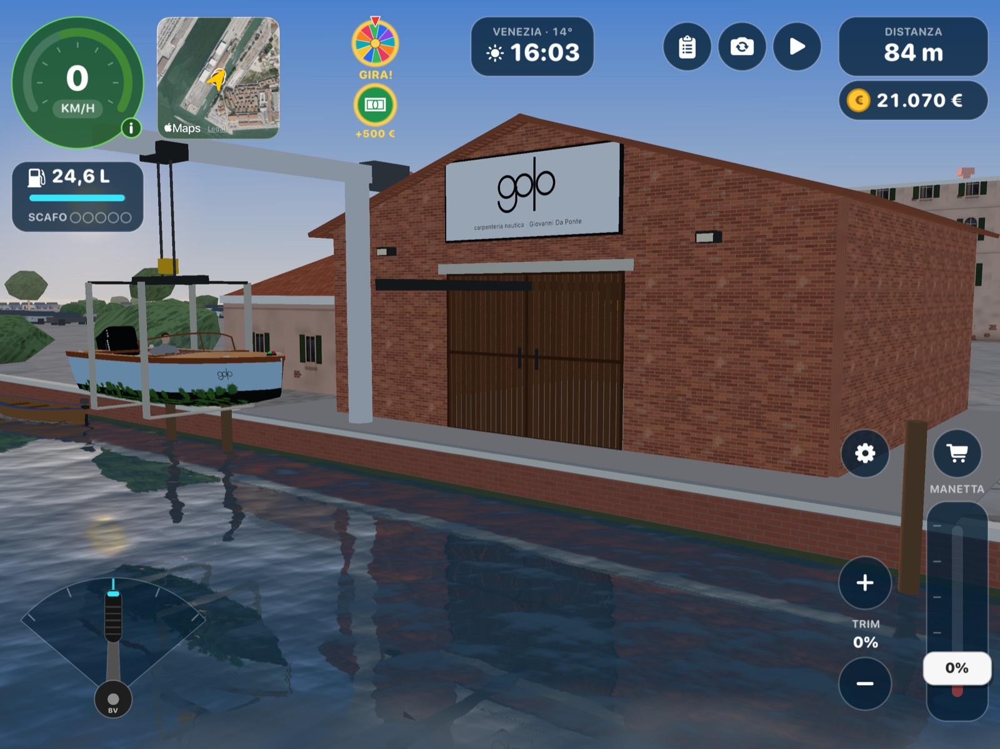
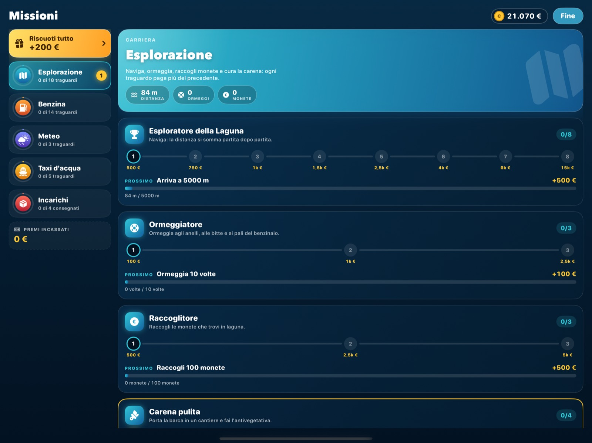
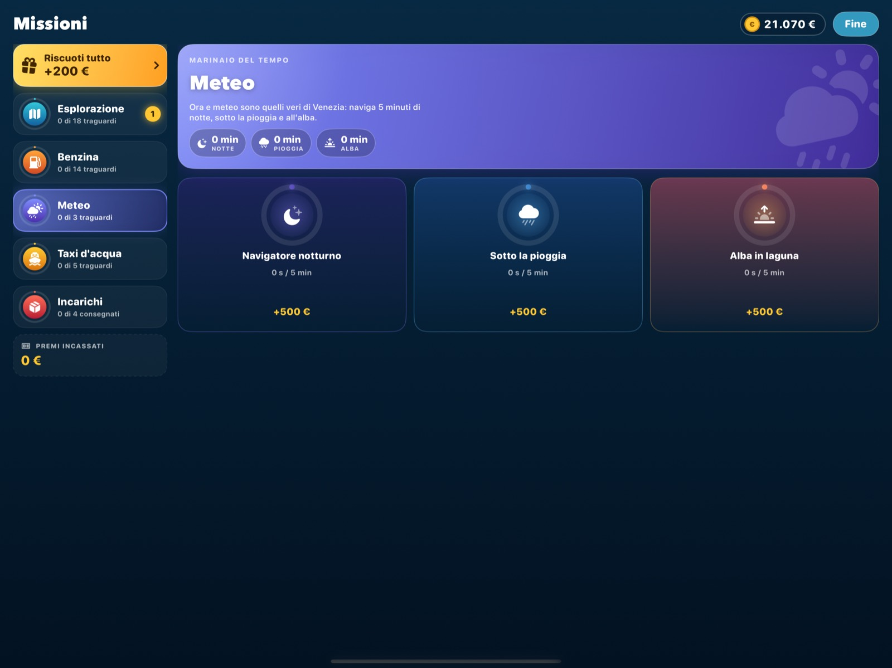
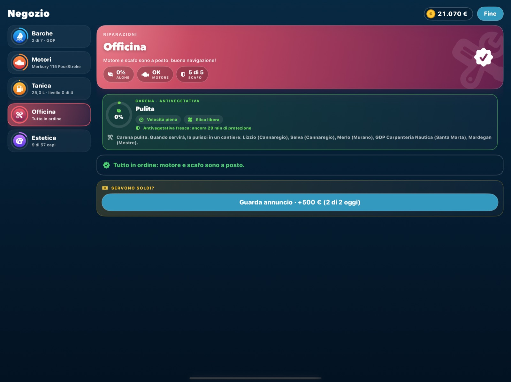
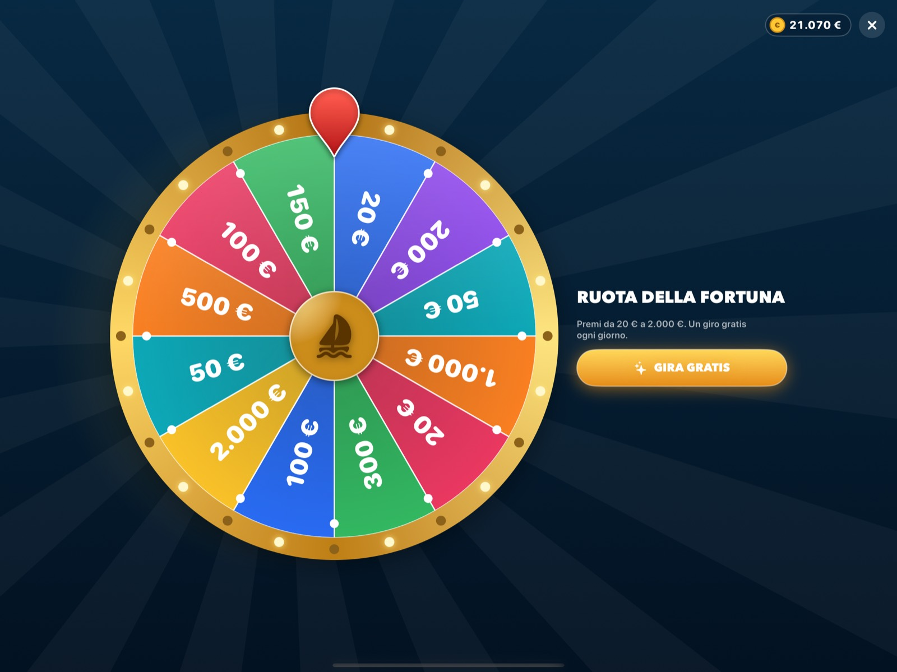

BarcaVeloxGame
← Home
BarcaVeloxGame
← Home
BarcaVeloxGame
← Home
BarcaVeloxGame
← Home

Un gioco di barche in 3D nella Venezia vera: canali, ponti, isole e laguna da esplorare al timone del tuo barchino.

La mappa è costruita dai dati di OpenStreetMap: il Canal Grande, i rii, i ponti, le fermate dei vaporetti, le briccole, le barene della laguna, Murano e la Giudecca. Se conosci Venezia, ti orienti come a casa.
Intorno a te la città è viva: vaporetti, taxi, ambulanze e la polizia girano per i canali.
Parti con un barchino in vetroresina e un piccolo fuoribordo. Il resto te lo guadagni navigando.
Sette barche, dal cofano alla topa, e motori sempre più potenti fino al V8. E nel negozio trovi anche l'estetica per personalizzarle.
Il cielo segue Venezia in tempo reale: alba, tramonto, notte, nuvole e pioggia come fuori dalla finestra.
Traguardi di esplorazione, ormeggi, benzina e meteo: ogni obiettivo raggiunto paga in euro di gioco.
Prendi la licenza, carica i passeggeri e porta i pacchi a destinazione. Attento a quelli fragili!
Corri troppo nei canali? Sirene accese e inseguimento. Se ti prendono, la multa si paga.
Fai il pieno al distributore, ripara lo scafo e porta la barca nei cantieri veri della laguna per pulire la carena.




